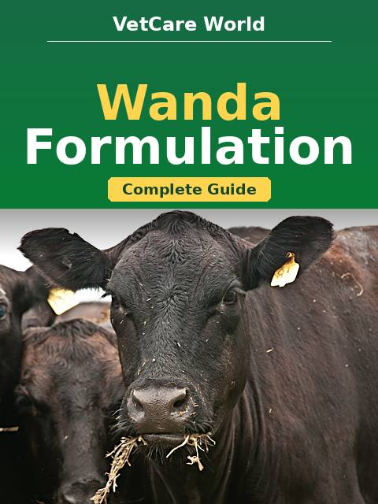

پہلے سچ جان لیں
دودھ کسی ٹوٹکے یا انجکشن سے نہیں بڑھتا۔ دودھ کا انحصار چار باتوں پر ہے: نسل، خوراک، صحت اور دیکھ بھال۔ یہ رہنمائی انہی چاروں کو درست کرنے کے عملی طریقے بتاتی ہے۔ نتائج ہر جانور و حالات کے مطابق مختلف ہوتے ہیں — اسی لیے یہاں کوئی گارنٹی والا دعویٰ نہیں کیا گیا۔
متوازن خوراک — دودھ کی بنیاد
- سبز چارہ روزانہ کافی مقدار میں دیں — یہ دودھ کی پیداوار کی سستی بنیاد ہے۔ موسم کے مطابق برسیم، لوسرن، جئی یا مکئی کا چارہ استعمال کریں۔
- خشک چارہ/بھوسا پیٹ بھرنے اور ہاضمے کے لیے ضروری ہے — صرف ونڈے پر جانور نہ رکھیں۔
- ونڈا دودھ کی مقدار کے حساب سے دیں: زیادہ دودھ دینے والے جانور کو زیادہ ونڈا چاہیے۔ درست فارمولے کے لیے ہماری لائبریری میں موجود ونڈا فارمولا گائیڈ اور کمرشل ڈیری ونڈا گائیڈ دیکھیں۔
- خوراک میں تبدیلی بتدریج کریں — اچانک چارہ/ونڈا بدلنے سے دودھ بھی گرتا ہے اور پیٹ بھی خراب ہوتا ہے۔
- پھپھوندی لگا یا گیلا خراب چارہ ہرگز نہ دیں — یہ صحت و دودھ دونوں کو نقصان دیتا ہے۔
پانی — سب سے سستی خوراک
دودھ کا بیشتر حصہ پانی ہوتا ہے۔ جس جانور کو پانی کم ملے، اس کا دودھ بھی کم ہوگا۔ ہر وقت صاف، تازہ پانی سامنے رکھیں، گرمیوں میں خاص طور پر بار بار بھریں، اور پانی کے برتن/حوض باقاعدگی سے صاف کریں۔
نمکیات اور معدنیات
کیلشیم، فاسفورس اور دیگر معدنیات کی کمی دودھ بھی گھٹاتی ہے اور تولیدی مسائل بھی پیدا کرتی ہے۔ جانور کو اچھا منرل مکسچر ڈاکٹر/محکمے کی ہدایت کے مطابق باقاعدگی سے دیں اور چاٹنے کے لیے نمک کی ڈلی ہر وقت رکھیں۔ (تفصیل: معدنی خوراک کی انگریزی رہنمائی)
دودھ نکالنے کا معمول
- ہر روز مقررہ اوقات پر دودھ نکالیں — وقت بدلنے سے جانور پریشان ہوتا ہے اور دودھ کم اترتا ہے۔
- پرسکون ماحول رکھیں؛ مار پیٹ و شور سے دودھ رکتا ہے۔
- دودھ مکمل نکالیں — آخری دودھ میں چکنائی زیادہ ہوتی ہے اور تھن میں دودھ چھوڑنا ساڑھ کو دعوت دیتا ہے (دیکھیں: ساڑھ کی رہنمائی)۔
- دودھ سے پہلے تھن صاف و خشک کریں اور صفائی کا پورا خیال رکھیں۔
صحت — خاموش دودھ چور
دودھ اچانک کم ہونے کی بڑی وجوہات بیماریاں ہیں: پوشیدہ ساڑھ، پیٹ کے کیڑے، بخار یا چارے کی اچانک تبدیلی۔ اس لیے باقاعدہ ویکسین، ڈی ورمنگ اور جانور کی روزانہ نظر رکھنا دودھ بڑھانے کا حصہ ہے۔
⚠️ خبردار: ڈاکٹر کے مشورے کے بغیر دودھ بڑھانے والے انجکشن، ہارمون یا نامعلوم دوائیں ہرگز استعمال نہ کریں۔ یہ جانور کی صحت، تولید اور آپ کے دودھ کی ساکھ — تینوں کے لیے نقصان دہ ہیں۔
اکثر پوچھے جانے والے سوالات
کیا ونڈا بڑھانے سے دودھ فوراً بڑھ جائے گا؟
نہیں، تبدیلی بتدریج آتی ہے اور خوراک کی تبدیلی بھی آہستہ کرنی چاہیے۔ اچانک زیادہ ونڈا دینے سے پیٹ خراب ہو کر دودھ مزید گر سکتا ہے۔
سبز چارہ کتنا دینا چاہیے؟
عام رہنمائی یہ ہے کہ جانور کی خوراک کا بڑا حصہ چارہ ہو اور ونڈا دودھ کے حساب سے اوپر سے دیا جائے۔ مقدار جانور کے وزن و دودھ پر منحصر ہے — اپنے جانور کے لیے درست راشن ڈاکٹر یا محکمہ لائیوسٹاک سے بنوائیں۔
دودھ اچانک کم ہو جائے تو پہلے کیا دیکھیں؟
ترتیب سے دیکھیں: بخار یا بیماری؟ تھن میں سوجن/دودھ میں گٹھلی (ساڑھ)؟ چارہ یا پانی بدلا؟ کیڑوں کی دوا کب دی تھی؟ وجہ مل جائے تو علاج اسی کا کریں، خود سے دوائیں نہ آزمائیں۔
کیا بھینس کا دودھ بھی انہی طریقوں سے بڑھتا ہے؟
جی ہاں، اصول وہی ہیں: متوازن خوراک، پانی، معدنیات، پرسکون دودھ نکالنا اور صحت۔ بھینس گرمی سے زیادہ متاثر ہوتی ہے، اس لیے گرمیوں میں سایہ و پانی کا خاص خیال رکھیں۔
خشک (دودھ نہ دینے والے) دور کی دیکھ بھال کیوں اہم ہے؟
کیونکہ اگلے سوئے کی دودھ کی تیاری اسی دور میں ہوتی ہے۔ خشک دور میں متوازن خوراک و معدنیات دینے والا جانور اگلی بار بہتر دودھ دیتا ہے۔
متعلقہ صفحات
ویکسینیشن شیڈول · ساڑھ (تھن کی سوزش) · منہ کھر کی بیماری · بچھڑوں کی پرورش · کیڑوں کی دوا (ڈی ورمنگ) · انگریزی: Nutrition & Feeding · کمرشل ڈیری ونڈا گائیڈ
⚠️ اہم بات: یہ رہنمائی صرف تعلیمی مقصد کے لیے ہے۔ بیماری کی درست تشخیص اور دوا کی خوراک کے لیے اپنے قریبی رجسٹرڈ ویٹرنری ڈاکٹر سے ضرور مشورہ کریں۔